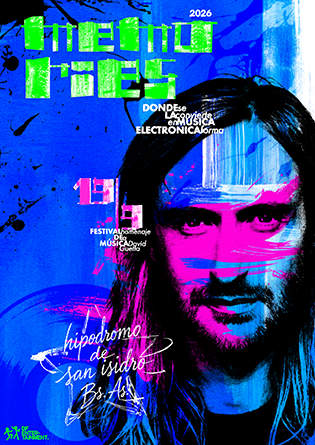
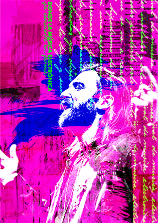
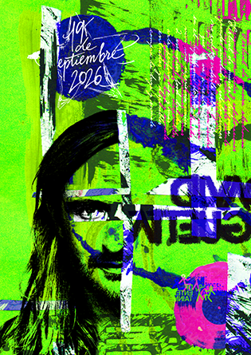

TITANIUM
LETRA EXPERIMENTAL
Este trabajo práctico consistió en desarrollar un sistema gráfico experimental inspirado en David Guetta y su universo musical. La propuesta incluyó cuatro afiches, un espécimen tipográfico y piezas complementarias, como postales y una pieza editorial, manteniendo una identidad visual coherente a través de la exploración tipográfica, las formas y el lenguaje gráfico.
We're beautiful now


